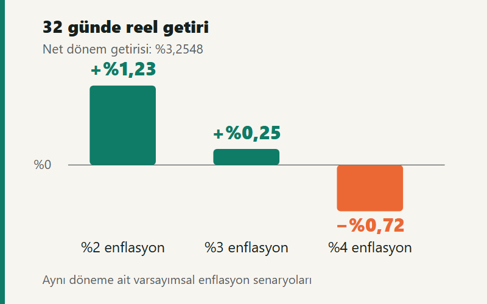

Kısa cevap
Mevduat, aynı dönemdeki net getiri oranı enflasyondan yüksekse satın alma gücünü artırır. Kesin hesap: reel getiri = (1 + net getiri oranı) ÷ (1 + enflasyon oranı) − 1. Örneğimizde yıllık %45 brüt faiz, 32 gün ve %17,5 stopajla net dönem getirisi %3,2548'dir. Aynı 32 günde fiyatlar %4 artarsa para bakiyesi büyür; satın alma gücü yaklaşık %0,72 azalır.
100.000 TL'nin 32 günlük net faizi nasıl bulunur?
Bir mevduat teklifindeki %45 gibi faiz oranı çoğunlukla yıllık brüt oranı ifade eder. Bu oran, 32 günde anaparanın %45'i kadar kazanç sağlayacağınızı söylemez. Önce gün sayısıyla vade getirisi hesaplanır, ardından faiz üzerinden stopaj kesilir.
Aşağıdaki örnekte anapara 100.000 TL, yıllık brüt faiz %45, vade 32 gün ve stopaj %17,5'tir. Hesap 365 günlük yıl esasıyla yapılır; ek masraf ve faiz işletilmeyen bakiye olmadığı varsayılır. %45 bir banka teklifi veya piyasa ortalaması değil, hesap varsayımıdır.
| Adım | Hesap | Sonuç |
|---|---|---|
| Brüt faiz | 100.000 × 0,45 × 32 ÷ 365 | 3.945,21 TL |
| Stopaj | Brüt faiz × 0,175 | 690,41 TL |
| Net faiz | Brüt faiz − stopaj | 3.254,79 TL |
| Vade sonu bakiye | Anapara + net faiz | 103.254,79 TL |
| Net dönem getirisi | Net faiz ÷ anapara | %3,2548 |
Ara işlemler yuvarlanmadan hesaplanmış, tutarlar gösterimde kuruşa yuvarlanmıştır. Bankanın işlem ve yuvarlama yöntemi kuruş düzeyinde fark oluşturabilir.
Örnekteki %17,5 stopaj, GİB tablosunda 9 Temmuz 2025 ve sonrasında açılan veya yenilenen standart TL mevduatın altı aya kadar vadeleri için yer alan orandır. GİB'in geçici 67. madde kesinti oranları 10 Eylül 2026 tarihinde kontrol edilmiştir. Hesabın açılış veya yenileme tarihi, vadesi ve ürünün kapsamı önemlidir; bütün mevduatlara tek oran uygulanmaz.
Kendi tutarınızı vadeli mevduat hesaplama aracına girerek net faizi bulun. Stopajın hangi tutardan kesildiğini ayrıntılı incelemek için stopaj hesaplama yazısına bakabilirsiniz.
Reel getiri formülü: faizden enflasyonu çıkarmak yeterli mi?
Net faiz hesabı, para miktarındaki değişimi gösterir. Reel getiri ise bu paranın fiyat artışından arındırılmış satın alma gücündeki değişimidir. Başlangıçta 100 TL olan bir sepet %4 enflasyonla 104 TL olur. Elinizdeki yeni bakiyeyi eski fiyatlarla değerlendirmek için 1,04'e bölmeniz gerekir.
Reel getiri oranı = (1 + net dönem getirisi) ÷ (1 + aynı dönemin enflasyonu) − 1. Formülde %3 için 0,03 yazılır; sonuç yüzdeye çevrilirken 100 ile çarpılır.
Bu nedenle iki yüzdeyi doğrudan çıkarmak yalnızca bir yaklaşımdır. Net yıllık getiri %40, aynı yılın enflasyonu %30 ise fark 10 yüzde puandır; kesin reel getiri 1,40 ÷ 1,30 − 1 ≈ %7,69 olur. Oranlar büyüdükçe basit çıkarma daha yanıltıcı hale gelir.
32 günlük örneğimizde net getiri değişmesin. Aynı dönemin enflasyonu için üç farklı varsayım kullandığımızda sonuçlar şöyle ayrışır:
| 32 günlük enflasyon varsayımı | Reel getiri | Başlangıç fiyatlarıyla bakiye | Reel kazanç veya kayıp |
|---|---|---|---|
| %2 | +%1,23 | 101.230,19 TL | +1.230,19 TL |
| %3 | +%0,25 | 100.247,37 TL | +247,37 TL |
| %4 | −%0,72 | 99.283,46 TL | −716,54 TL |
Son satırda hesabınızdan 716,54 TL kesilmez. Bankadaki para yine 103.254,79 TL'dir. Fakat bu parayla, vade başında 99.283,46 TL'ye alınabilen mal ve hizmet sepetini alabilirsiniz. Reel kayıp, burada para çıkışı değil satın alma gücü kaybıdır.

32 günlük mevduatı hangi enflasyonla karşılaştırmalısınız?
Yıllık faiz oranını aylık enflasyonla veya 32 günlük net getiriyi yıllık enflasyonla yan yana koymak doğru sonuç vermez. Başlangıç ve bitiş dönemi aynı olmalıdır. TÜİK'in tüketici fiyatları açıklamasına göre TÜFE, hanehalklarının tüketimine yönelik mal ve hizmetlerin fiyat değişimini ölçer. Kişisel harcama sepetinizin fiyat artışı bu ortalamadan farklı olabilir.
Aylık TÜFE endeksleriyle ölçülebilen bir dönem için enflasyon, bitiş endeksi ÷ başlangıç endeksi − 1 olarak bulunur. Birkaç aylık oranları da toplamak yerine bileştirmek gerekir: art arda %2 ve %3 fiyat artışı toplamda 1,02 × 1,03 − 1 = %5,06 eder.
Ancak TÜFE, her gün için açıklanan bir endeks değildir. Örneğin 10 Eylül'de başlayıp 12 Ekim'de biten mevduatın tam 32 gününe karşılık gelen resmî günlük TÜFE serisi yoktur. Aylık veriden günlere dağıtılan bir oran tahmindir; bunu gerçekleşmiş 32 günlük enflasyon diye sunmamak gerekir. Yukarıdaki %2, %3 ve %4 değerlerinin senaryo olarak belirtilmesinin nedeni budur.
Vade başında gelecekteki enflasyon da bilinmez. Karar verirken beklenen enflasyonla senaryo kurabilir, dönem geçtikten sonra uygun dönem verileriyle sonucu değerlendirebilirsiniz. Bugünkü yıllık enflasyon, gelecek 32 günün fiyat artışı vaadi değildir.
Bir başka ayrım, istatistiğin brüt veya net olmasıdır. TÜİK'in finansal yatırım araçları reel getiri metodolojisinde mevduat için brüt faiz esas alınır. Kendi cebinize kalan satın alma gücünü hesaplarken ise stopaj sonrası net getirinizi kullanın; iki sonucun aynı çıkması beklenmez.
Enflasyonu karşılamak için faiz en az kaç olmalı?
Reel getirinin sıfır olduğu noktada net dönem getirisi, dönem enflasyonuna eşittir. Örneğimizde başabaş enflasyon %3,2548'dir. Fiyat artışı bunun altında kalırsa satın alma gücü artar; üstüne çıkarsa azalır.
Soruyu tersinden de sorabilirsiniz: Aynı 32 günde %3 enflasyon bekliyorsanız, %17,5 stopajla bunu karşılayan yıllık brüt faiz oranı nedir?
Gerekli yıllık brüt faiz = dönem enflasyonu × 365 ÷ vade günü ÷ (1 − stopaj oranı). Bu varsayımlarla 0,03 × 365 ÷ 32 ÷ 0,825 = yaklaşık %41,48 bulunur.
Bu eşik bir faiz tahmini veya yatırım tavsiyesi değildir. Beklenen enflasyonun gerçekleşmesi, yılın 365 gün esas alınması, tutarın tamamına faiz işlemesi ve ek maliyet olmaması varsayımlarına bağlıdır. Kampanyada bakiyenin bir bölümü faizsiz bırakılıyorsa, net kazancı yalnızca faiz işleyen bölüme değil ayırdığınız toplam paraya bölerek karşılaştırın.
32 günlük vadeyi sürekli yenilerseniz ne değişir?
Faizi anaparaya ekleyip hesabı yenilediğinizde sonraki vadenin faizi daha büyük tutara işler. Örnekte aynı oranlar iki vadede de geçerli olsaydı, 64 günlük net getiri (1 + 0,032547945)² − 1 ≈ %6,62 olurdu. Bunun da 64 günlük enflasyonla karşılaştırılması gerekir.
Gelecek vadelerde banka faizi ve uygulanacak stopaj değişebilir. Farklı dönemlerdeki net oranlar (1 + r₁) × (1 + r₂) × … − 1 biçiminde birleştirilir; her yenilemede para eklenmediği veya çekilmediği varsayılır. Ayrıca 12 adet 32 günlük vade 384 gündür; bunu bir yıllık getiri diye adlandırmak süreyi uzatır.
Düzenli ek ödeme ve daha uzun vadeler için birikim hesaplama aracındaki senaryoları, ölçümdeki diğer hatalar için uzun vadeli yatırım yazısını inceleyebilirsiniz. Tek vadeli teklifleri karşılaştırırken önce süreyi eşitlemek, sonra net getiriyi ve satın alma gücünü ayrı görmek daha anlamlıdır.
Kaynaklar ve hesap kapsamı
- GİB — GVK geçici 67. madde kapsamında kesinti oranları (PDF): mevduat stopajının tarih ve vade kapsamı.
- TÜİK — Enflasyon ve fiyat istatistikleri: TÜFE'nin ölçtüğü fiyat değişimi.
- TÜİK — Finansal yatırım araçlarının reel getiri oranları metodolojisi (PDF): dönemler ve brüt mevduat getirisi yaklaşımı.
Kaynak kontrolü: . Sayısal tablolar bu yazının açık varsayımlarından hesaplanmıştır; piyasa teklifi veya gerçekleşmiş enflasyon verisi değildir. İçerik genel finansal bilgilendirme içindir. Hesapta ya da kaynakta hata bildirmek için iletişim sayfasını, güncelleme ve düzeltme yaklaşımımız için yayın ilkelerini kullanabilirsiniz.